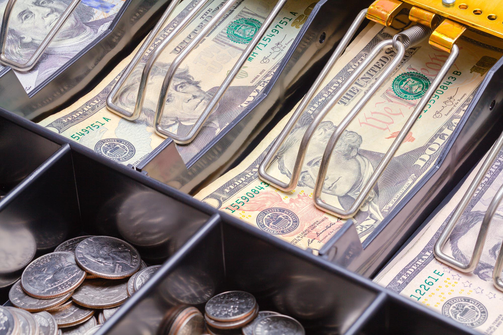
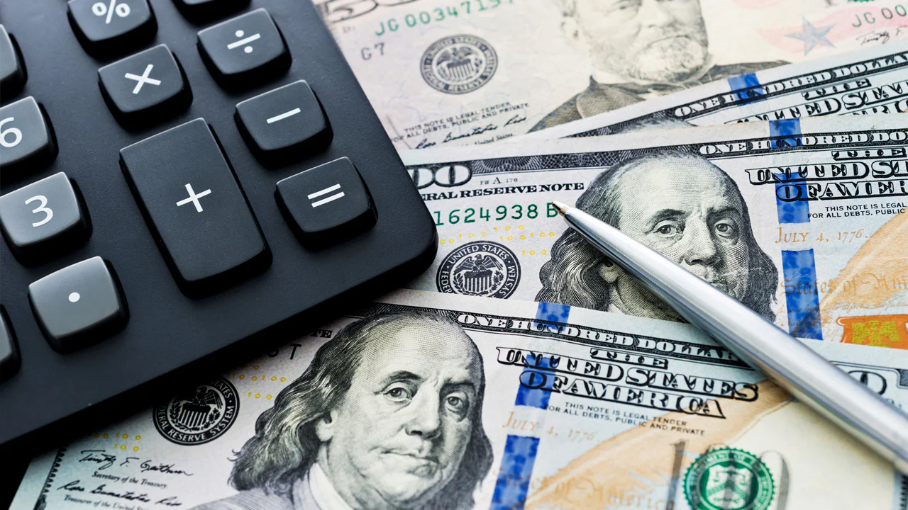
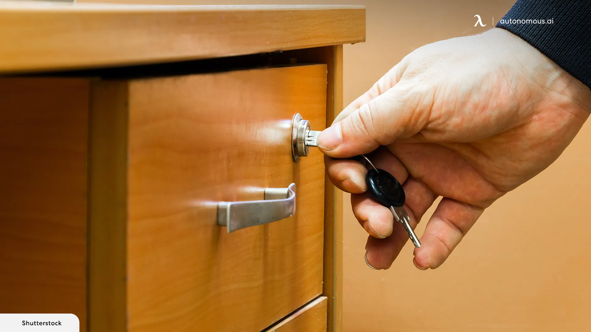
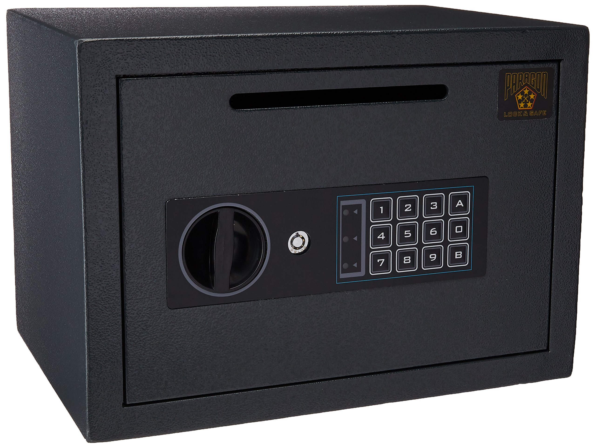

Cash Handling
Counter area is considered as a high-security area. Team members are required to be mindful of the following, as it has direct financial loss.
Cash Handling Procedure
Team members are required to adhere to the standard handling procedures to avoid all risks and issues.
Prevention of Unauthorized Access
Make sure to keep doors and drawers locked. In case of emergencies, a security alarm and policy link are provided to the counter desk. It is important to be mindful that the company values human lives above all.
Counterfeit Notes
All team members are trained to identify counterfeit notes. You shall use the detecting machine at all times to prevent any risks involved in accepting notes. Any losses will be recovered from the team member who accepted cash.

Ensure CCTV Coverage
Ensure CCTV footage recording is available covering the counter area to identify people and transactions.
Secure Storage
Insurance value is available for EUR 10,000.00, meaning that you are not allowed to keep more than EUR 10,000 in drawers at any given time. Excess money shall be transferred to the ‘Cash Safe’ during business hours. At the end of the day, balance cash will be transferred to the safe.
Cash Transportation
Excess cash will be collected by the respective bank during a pre-arranged time. Prior to handover cash, you are required to check the identification of the bank officer according to the email of the respective bank.